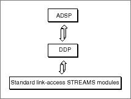

Legacy Document
Important: The information in this document is obsolete and should not be used for new development.
Important: The information in this document is obsolete and should not be used for new development.


About ADSP
The AppleTalk Data Stream Protocol (ADSP) includes both session and transport services and is the most commonly used of the AppleTalk transport protocols. ADSP allows you to establish and maintain a connection between two AppleTalk network entities and transfer data as a continuous stream. The two clients at either end of an ADSP connection are equal and can perform the same operations.ADSP, like all other high-level AppleTalk protocols, is a client of the Datagram Delivery Protocol (DDP), which transmits data in packets. However, ADSP builds a session connection on top of DDP's packet transfer services, so you can exchange data as a continuous stream. Figure 16-1 shows how the ADSP endpoint provider encompasses its underlying delivery protocol and link-access Streams modules.
Figure 16-1 The ADSP endpoint provider's underlying delivery mechanism

Communication between two client applications using ADSP occurs over a connection between two endpoints that provides reliable data delivery. When you bind an ADSP endpoint, the binding process associates a local protocol address with your endpoint. An ADSP address is a DDP address (network number and DDP socket) plus an ADSP session ID. ADSP can use the same DDP address for multiple ADSP sessions. The session ID is used to direct data to the proper ADSP session.
ADSP uses several internally maintained variables to track its progress as it transmits a data stream across a connection. For example, ADSP associates an internal sequence number with each byte that it sends. This allows ADSP to determine out-of-sequence or duplicate data. ADSP uses the sequence numbers to ensure that the other endpoint receives all of its intended data. If any data does not arrive, ADSP can retransmit it.
The data is available for retransmission because when an endpoint provider sends data to a remote connection end, ADSP first stores it in a buffer, called the send queue, and holds the data there until the remote connection end acknowledges receipt. Likewise, when data arrives from a remote endpoint, ADSP stores it in a receiving buffer, called the receive queue, until the local endpoint provider acknowledges reading it.
ADSP does not transmit data from the remote connection end until there is space available in the local receive queue. This built-in flow control keeps a connection from being jammed with too much data.